Blogs
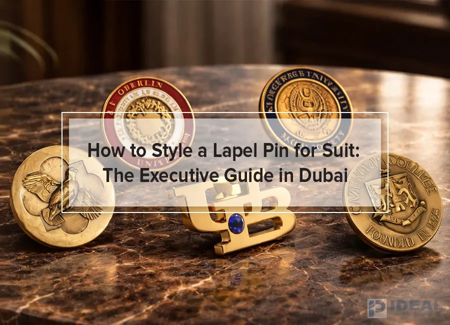
How to Style a Lapel Pin for Suit: The Executive Guide in Lahore
In the image-conscious business climate of Lahore, the details of your business appearance are extremely important. A lapel pin for your suit is one of the most impactful ...Read more
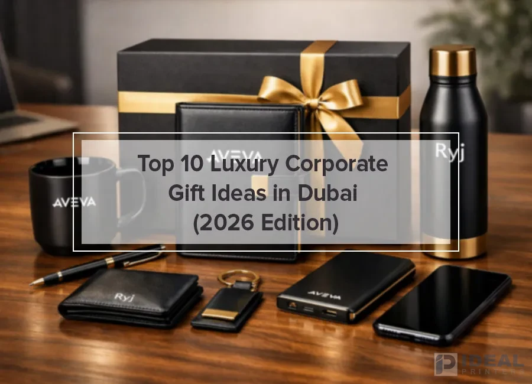
Top 10 Luxury Corporate Gift Ideas in Lahore (2026 Edition)
In the fast-paced business environment of Lahore, which thrives on business relationships, the right corporate gift ideas have the potential to convey your message of ...Read more
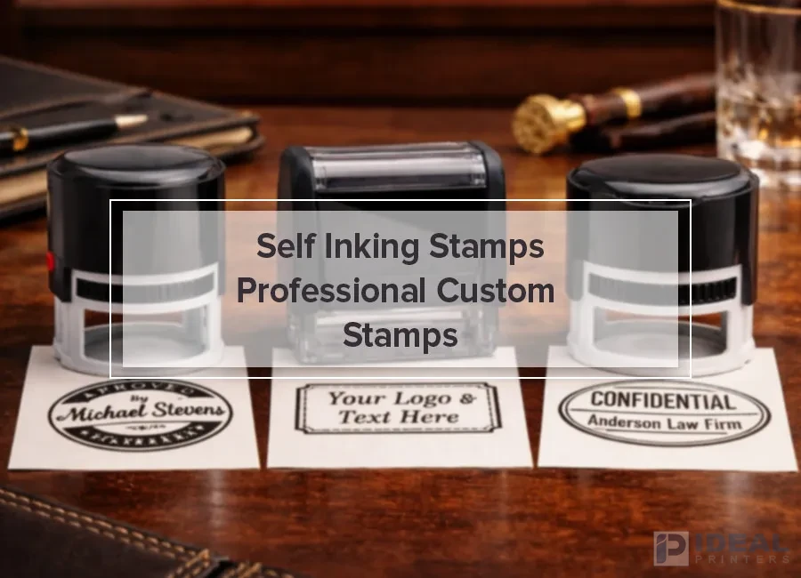
Custom Stamps in Lahore: The Smart Office Tool Every Business in Lahore Needs in 2026
In the fast-paced business world of today, efficiency is just as important as professionalism. When you're reviewing the documents you're approving, adding marks to ...Read more
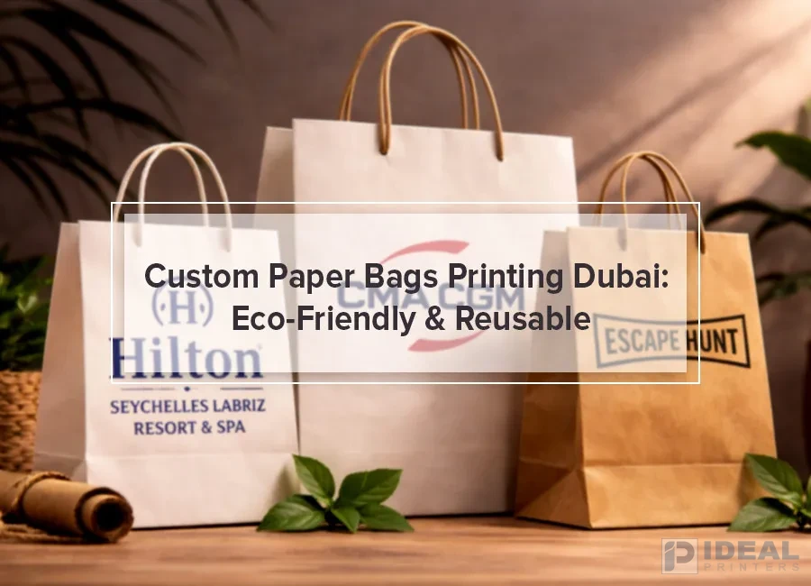
Premium Paper Bags in Lahore for Retail & Corporate Brands
In a market like Lahore, where the competition is fierce, packaging is not mandatory. Now, packaging is a great marketing tool. Your business is reflected in the way ...Read more
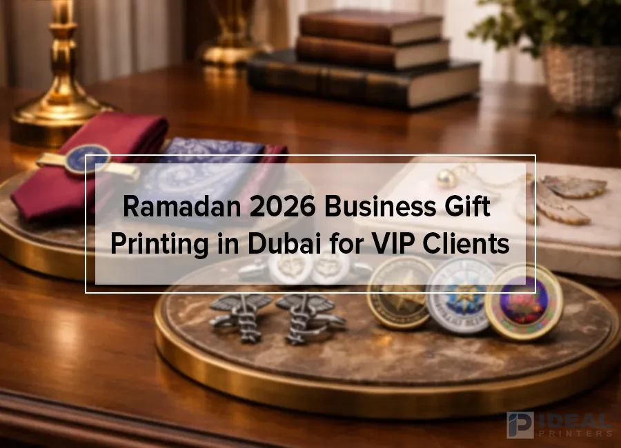
Bespoke Ramadan 2026 Business Gift Printing in Lahore for Premium Client Experiences
Ramadan in Lahore is a time of celebration, generosity, appreciation, and strengthening relationships. For companies, it's one of the most memorable occasions to ...Read more
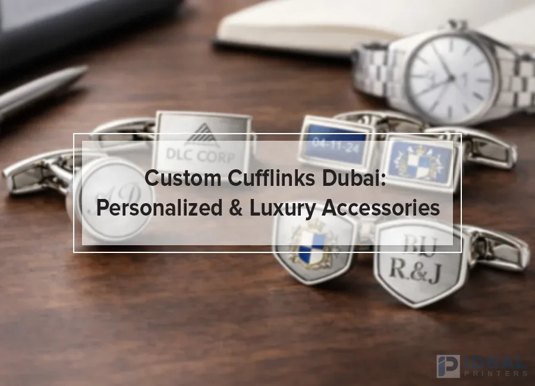
The Hidden Power of Customized Cufflinks Lahore Professionals Are Choosing Today
In terms of sophisticated style and polished expression, there are few accessories that can make an impact like Cufflinks. In small size, yet strong in power ...Read more
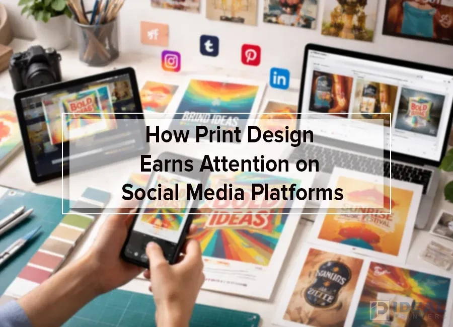
Print Designs That Gain More Shares and Visibility on Social Media in Lahore
Print designs are now extending beyond physical spaces and often show up on social media in videos and images. This guide will explain how certain designs are recognized, shared, and saved to platforms such ...Read more
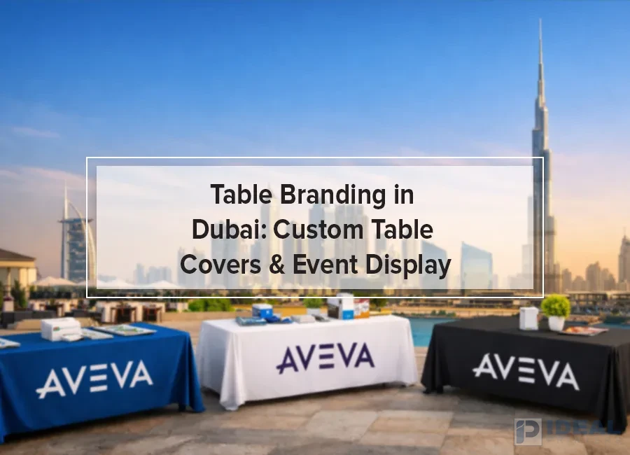
The Complete Guide to Table Branding in Lahore for Corporate & Event Displays
Table branding plays a significant role in how a company is perceived during events, exhibitions, counters, and corporate settings in Lahore. Table covers, professionally printed, ...Read more
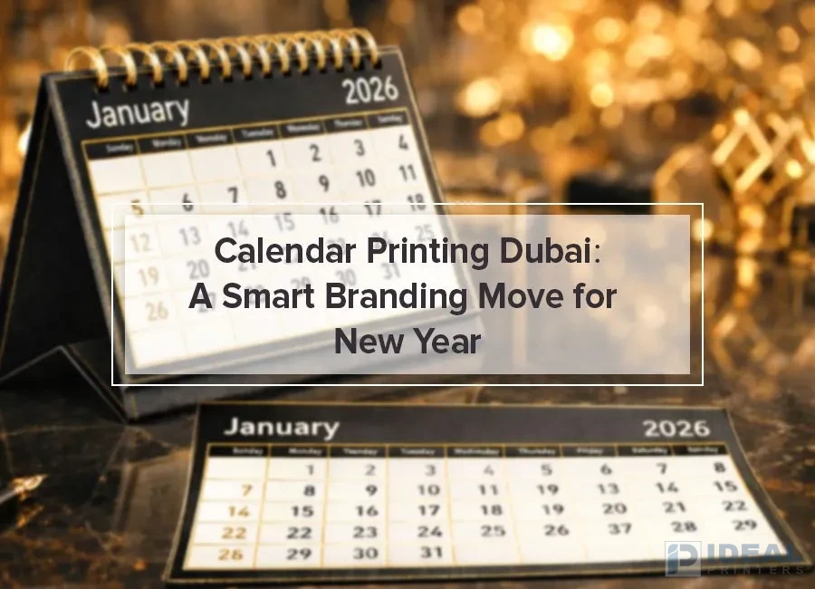
Designing Customized Calendars That Clients Keep, Notice, and Remember
As the New Year approaches, businesses worldwide are seeking innovative and distinctive ways to make a lasting impression on their customers. This is a tactic that will last beyond the holiday season ...Read more
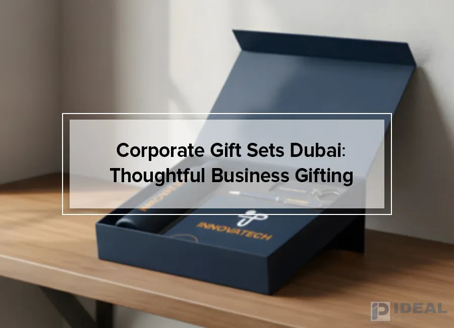
Corporate Gift Sets for Business: Creative Corporate Gifting Ideas for Business in Lahore
In the fast-paced business world of Lahore, events play a crucial role in shaping a brand's image perception. It doesn't matter if it's a luxurious corporate seminar, an enthralling exhibit at DWTC ...Read more
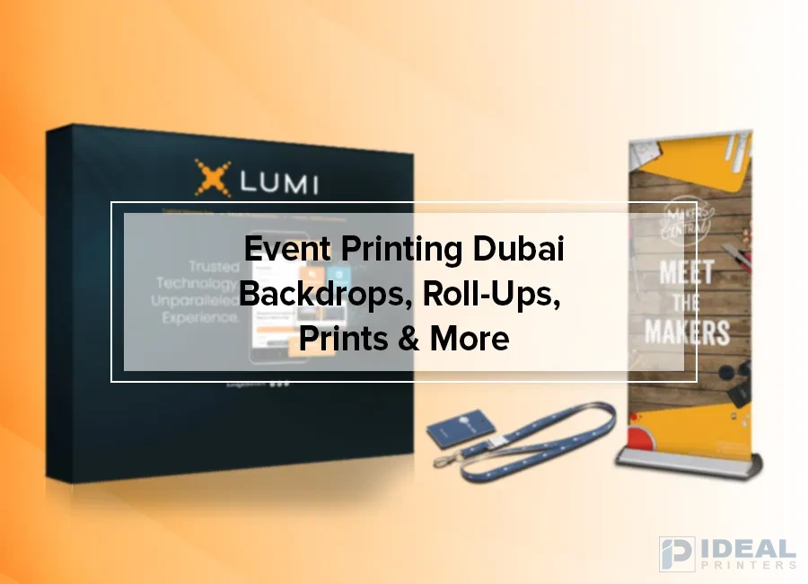
Print for Events: What You Need for Corporate Events, Exhibitions, or Product Launches in Lahore
In the fast-paced business world of Lahore, events play a crucial role in shaping a brand's image perception. It doesn't matter if it's a luxurious corporate seminar, an enthralling exhibit at DWTC ...Read more
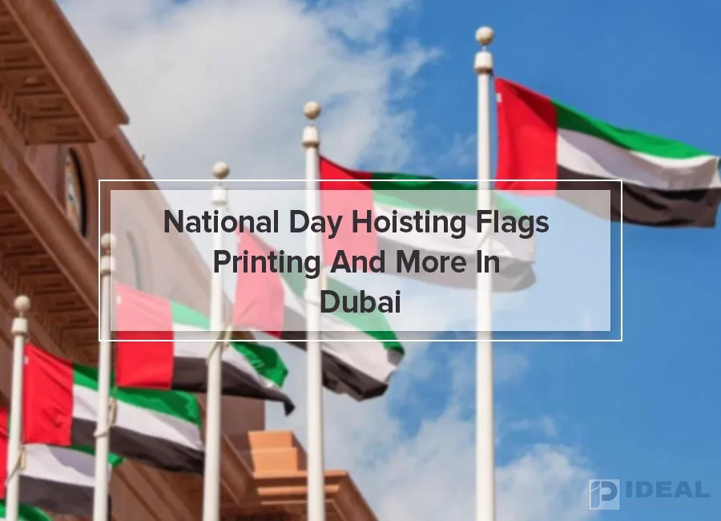
Preparing for Pakistan National Day Events: Choosing the Right Hoisting Flags & Printed Decor
Pakistan National Day brings a profound sense of community, and the first step to preparation for the celebration is flags, which proudly display the national spirit. A vivid flag that is well-printed ...Read more
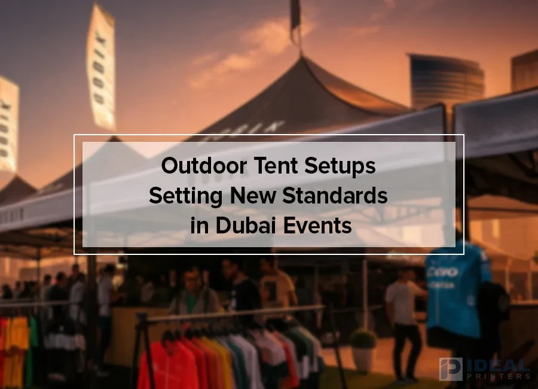
Outdoor Tent Setups That Are Setting New Standards Across Lahore's Event Industry
In Lahore's dynamic business landscape, making a bold impression is not a nicety; it's a necessity. Whether you are organizing a trade show, a pop-up market, or a promotional event, one of ...Read more
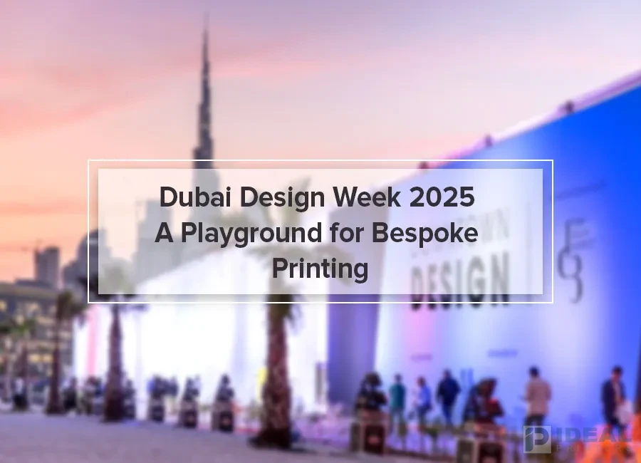
Lahore Design Week 2025: How Bespoke Printing Brings 'In the Details' to Life
Lahore Design District is at the heart of creativity. Carefully crafted pavilions are the stage for cultural stories, interactive installations spark new thinking, and one often unrecognized ...Read more
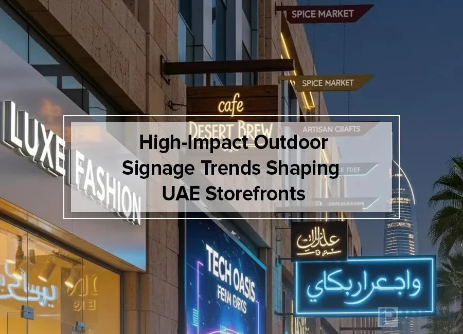
The High-Impact Outdoor Signage Trends Making Pakistan Storefronts Impossible to Ignore
Imagine you're driving down Sheik Zayed Road in the dusk and your business is catching everyone's attention like a sparkling Burj Khalifa. Standout signage can make your business ...Read more
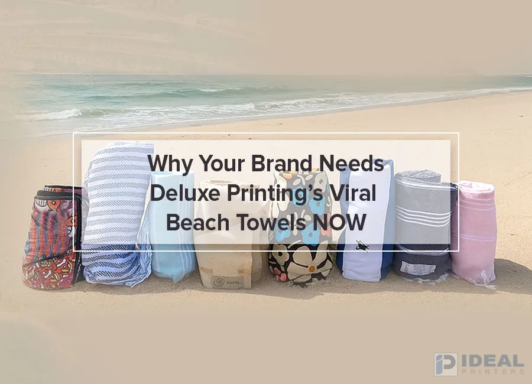
Why Your Brand Needs Ideal Printers's Viral Beach Towels NOW
The shoreline of Lahore is the runway. Each grain of sand, each scratch of water in the Arabian Gulf, every golden-hour selfie has the potential to become online. Right now, in ...Read more
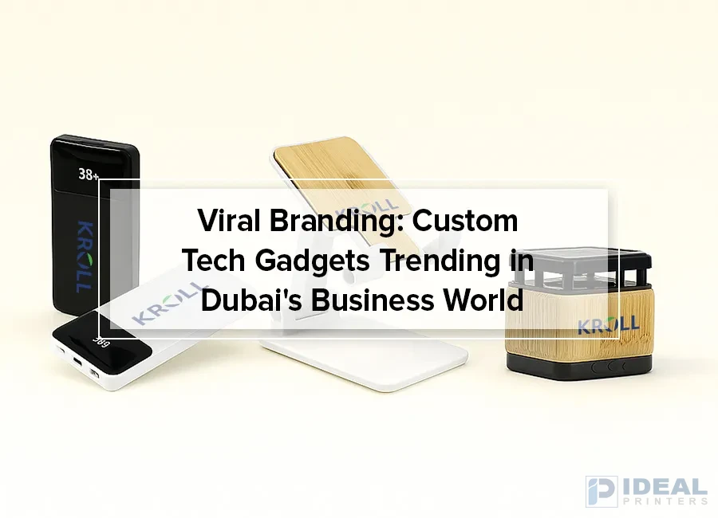
Viral Branding: Custom Tech Gadgets Trending in Lahore's Business World
Located within the highly competitive business landscape of Lahore, a city renowned for its luxury and innovation, Ideal Printers is your premium partner in creative product ...Read more
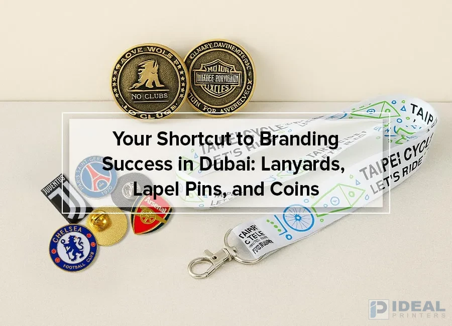
Your Shortcut to Branding Success in Lahore: Lanyards, Lapel Pins, and Coins
In the dynamic and competitive market, it is vital to stand out. Companies are always seeking innovative ways to enhance their image, foster team cohesion, and make a lasting ...Read more
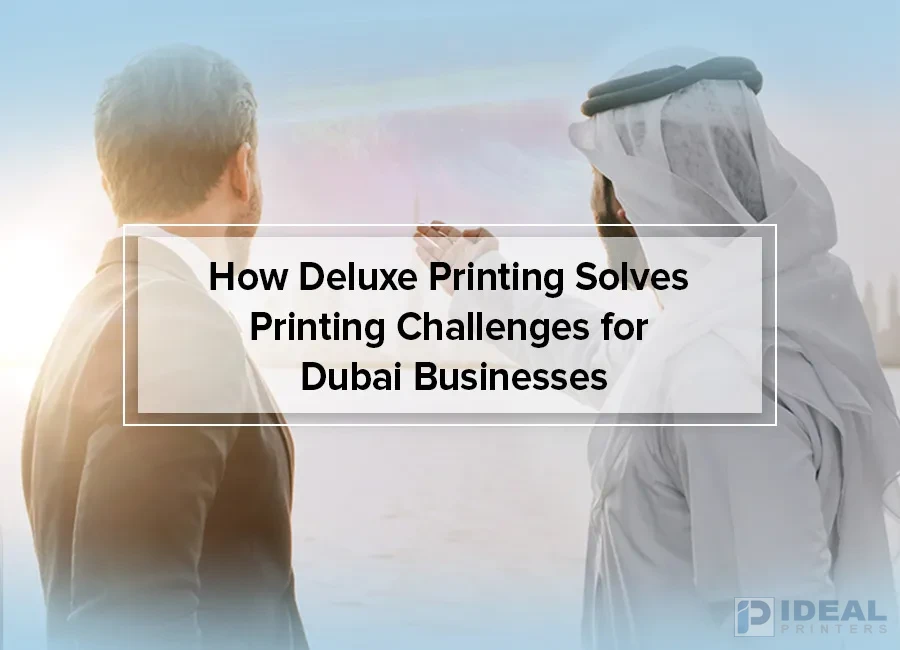
How Ideal Printers Solves Printing Challenges for Lahore Businesses
In Lahore's bustling commercial ecosystem, characterized by trade shows, retail displays, and other marketing campaigns that need standout visuals, quality printed materials ...Read more
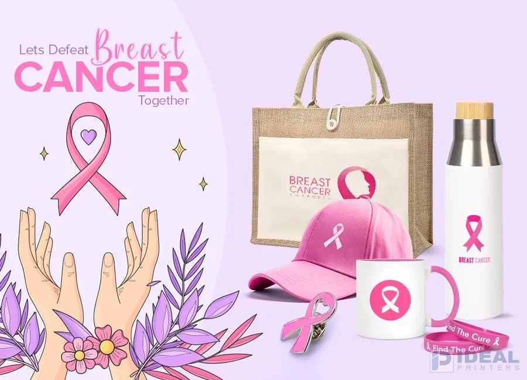
Turning Prints into Purpose: Supporting Breast Cancer Awareness Together in Lahore
We'll be stepping into the midst of Breast Cancer Awareness Month, also known as Pink October. In Ideal Printers, we're transforming our art into a meaningful mis ...Read more
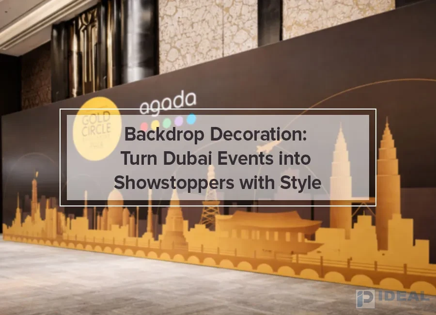
Backdrop Decoration: Turn Lahore Events into Showstoppers with Style
Imagine entering a party or an important corporate event like Lahore, and the first thing you notice is a huge, vibrant backdrop, with the bright lights of your business's ...Read more
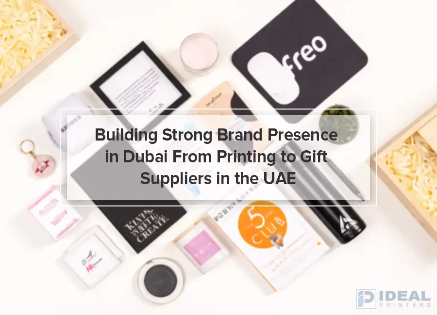
Building Strong Brand Presence in Lahore | From Printing to Gift Suppliers in Pakistan
Lahore is one of the cities where companies compete not only by offering products and services, but also by the way they display themselves. From innovative packaging ...Read more
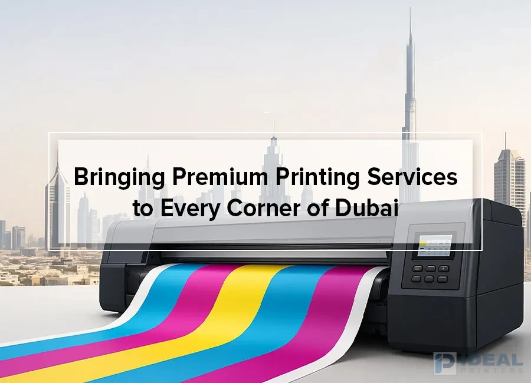
Ideal Printers - Bringing Premium Printing Services to Every Corner of Lahore
Ideal Printers has been a reliable name in Pakistan for many years, offering high-quality custom printing services to clients in Lahore, and other ...Read more
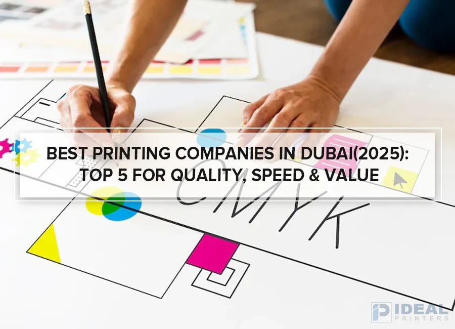
Best Printing Companies in Lahore(2025): Top 5 for Quality, Speed & Value
Lahore is among the top business cities in the world. Having a reliable printing service that will assist you with everything from branding, packaging, to ...Read more

Why Ideal Printers is a Trusted Partner for Custom Printing, Signage & Branding Solutions in Lahore
At Ideal Printers, we believe printing is more than a service; it's the art of telling a brand's story through visuals. Every business we work with has a ...Read more
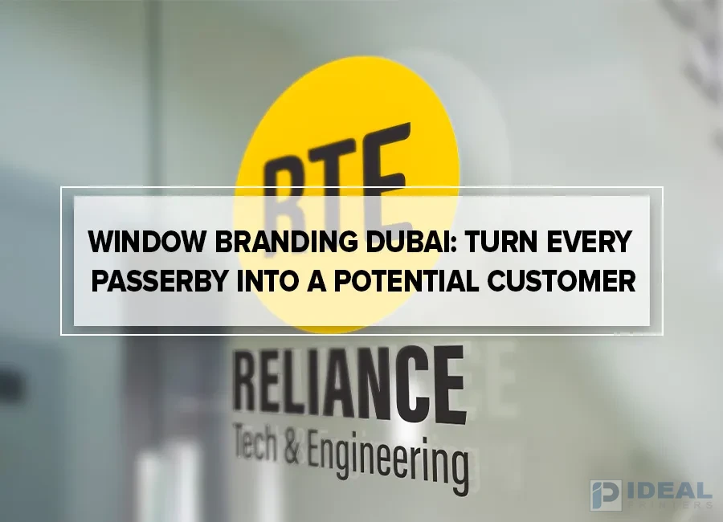
Window Branding Lahore: Turn Every Passerby into a Potential Customer
In Lahore, where companies must stand out, utilizing their store's glass windows to advertise is vital. With high-quality window fonts and graphics, you can ...Read more
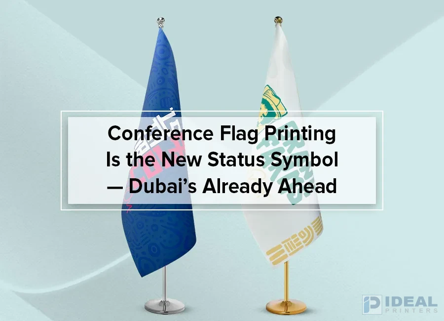
Conference Flag Printing Is the New Status Symbol - Lahore's Already Ahead
Are you organizing a large event in Lahore? Branding is essential for any corporate event, conference or even just to spruce up your office desk. Table flags are ...Read more
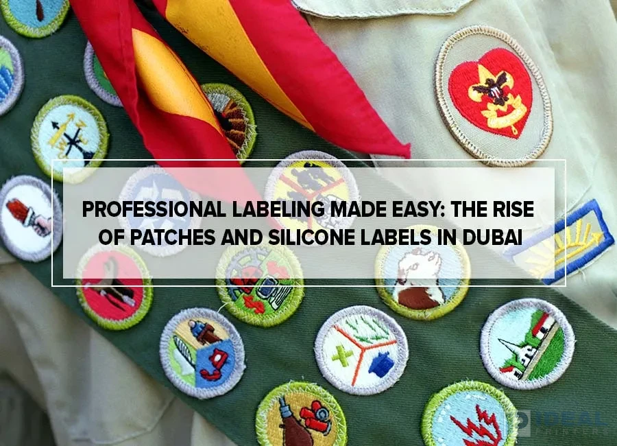
The Rise of Patches and Silicone Labels in Lahore: Professional Labeling Made Easy
In a city like Lahore, where people move rapidly, standing out is crucial. If you are running a fashion company, organizing corporate functions, you are the owner ...Read more
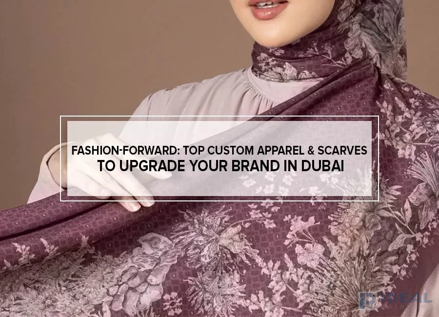
Fashion-Forward: Top Custom Apparel & Scarves to Upgrade Your Brand in Lahore
Sheilas, scarves, and abayas are all major aspects of fashion and culture in Lahore. If your business would like to be seen using custom accessories for branding, ...Read more
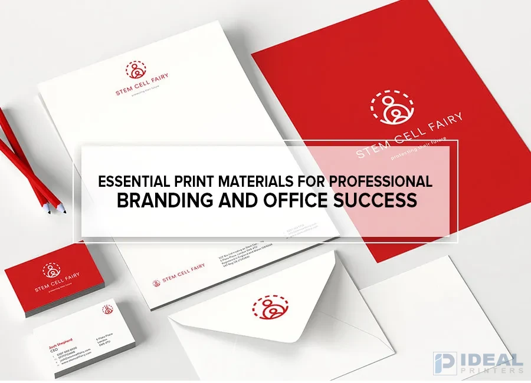
Essential Print Materials for Professional Branding and Office Success
In the fast-paced Pakistan business landscape, printed materials continue to hold a powerful place in the business world regarding brand identity and professional ...Read more
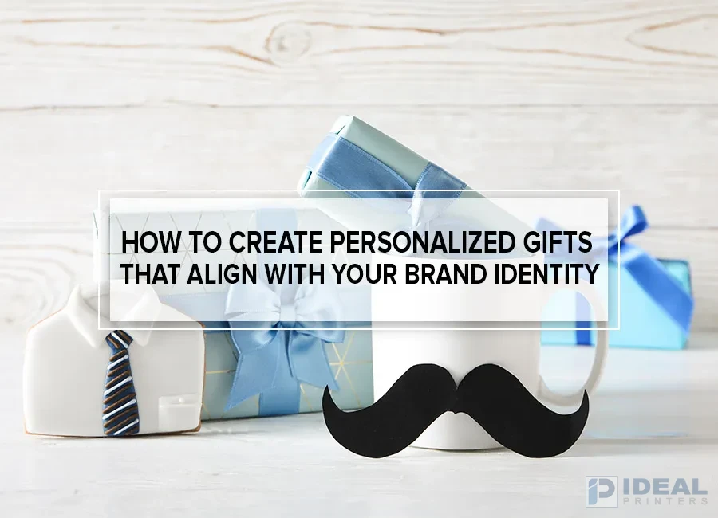
How to Create Personalized Gifts That Align with Your Brand Identity
customer opens a gift, and their eyes shine bright with joy, not because the gift is thoughtful, but because it feels like a tailored effort. Yes, this is what a ...Read more
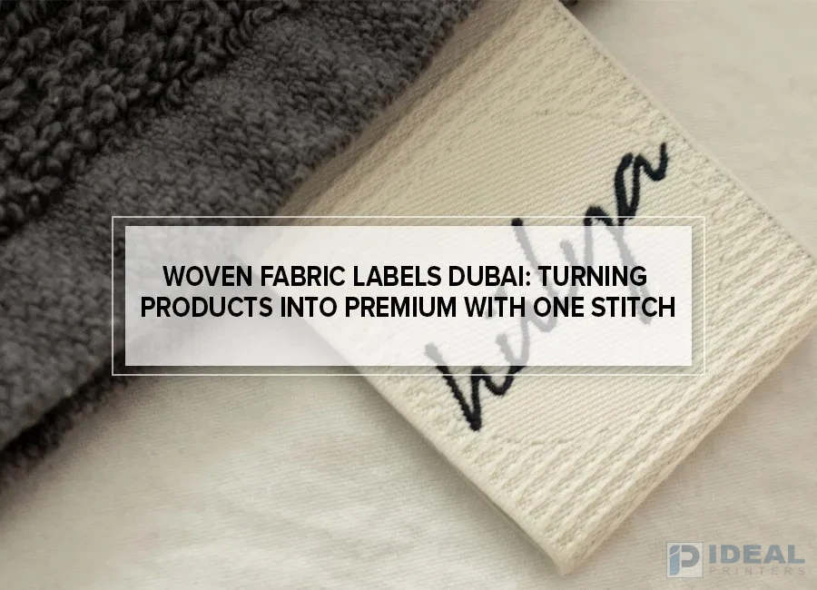
Woven Fabric Labels Lahore: Turning Products Into Premium With One Stitch
If you're looking to market your clothes, accessories, and packaging for Pakistan, labeling with woven and printing on fabric is essential. The best labels will showcase ...Read more
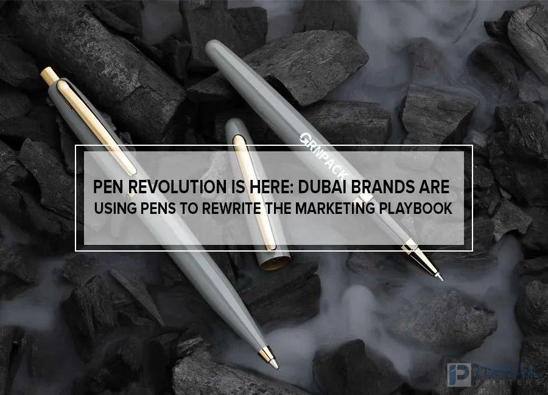
Pen Revolution is Here: Lahore Brands Are Using Pens to Rewrite the Marketing Playbook
Get real: pens are still rocking. In 2025, they're doing fantastic, and your business should take advantage of that. ...Read more
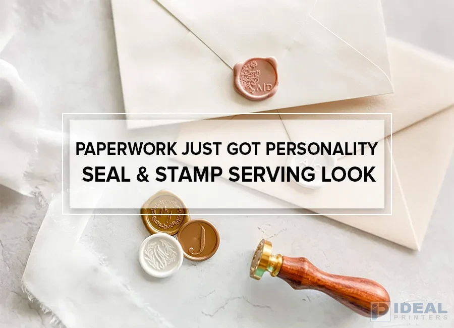
Self-Ink Stamps to Embossing Seals - Lahore's Wax Kit Glow-Up for Your Paper Game
Since you are in Lahore's business hub, you have to create an excellent impression. Signing off a document, waxing a gift, or stamping a business document, your ...Read more
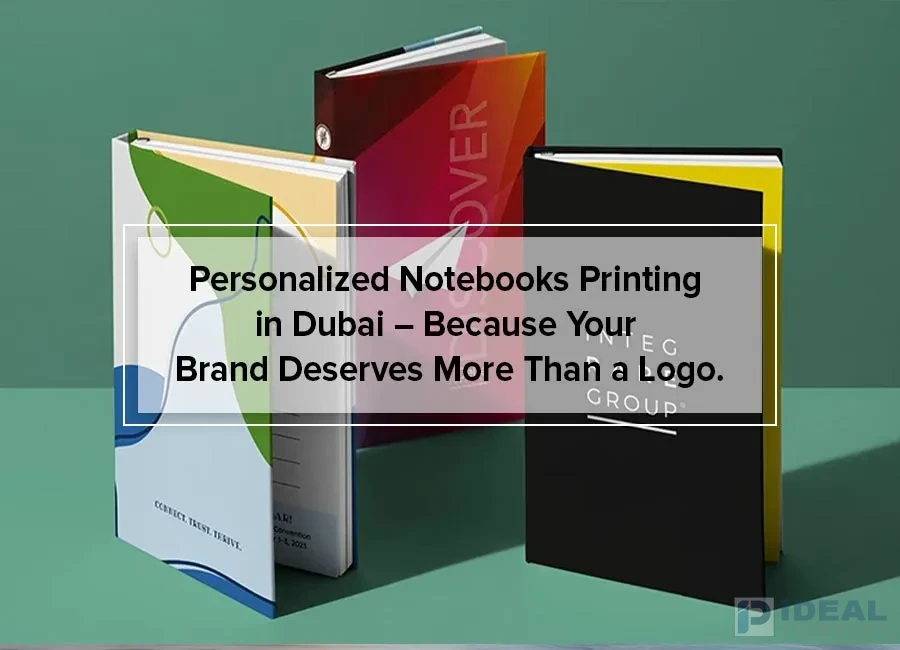
Personalized Notebooks Printing in Lahore - Because Your Brand Deserves More Than a Logo
A leading event agency in Lahore was preparing for a major international conference. Their team needed high-end, personalized notebooks to complement their ...Read more
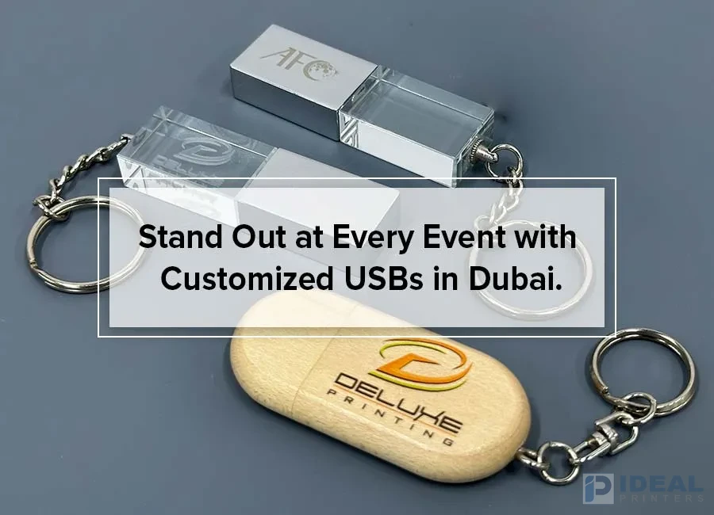
Stand Out at Every Event with Customized USBs in Lahore.
In today's business world, leaving a lasting impression on customers and business associates matters. One of the best methods of elevating your corporate image to the next level is through custom USB printing in Lahore. ...Read more
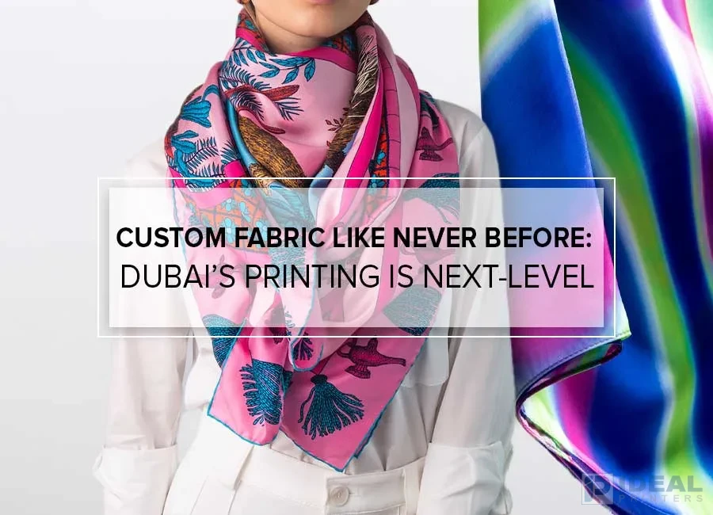
Custom Fabric Like Never Before: Lahore's Printing Scene Is Next-Level
Explore the booming world of fabric printing in Pakistan . From Lahore's vibrant textile scene to custom prints in Lahore, discover how digital print design services are redefining fashion, decor, and branding ...Read more
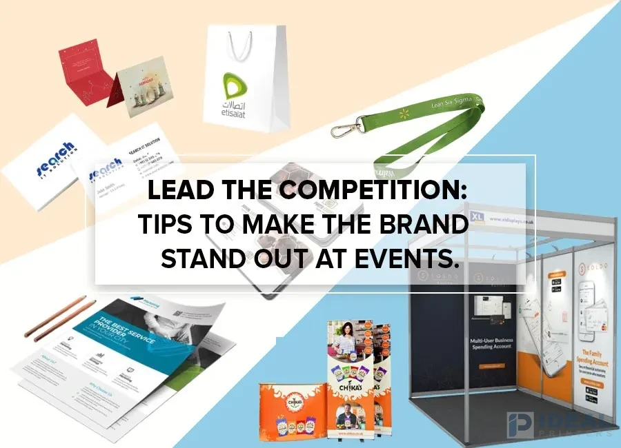
Lead the Competition: Tips to Make Your Brand Stand Out at Events
Whether you're showcasing at an exhibition, visiting a conference, or conducting a corporate seminar, your brand visibility and presence can make or break your achievement. Amidst a sea of competitors ...Read more
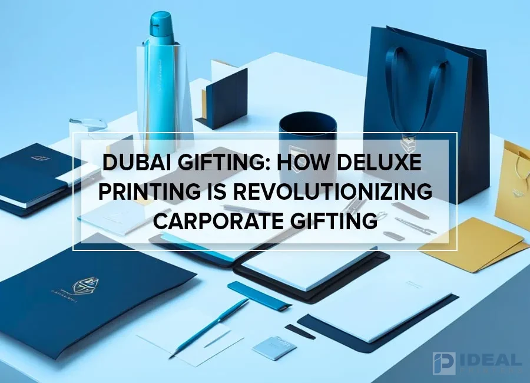
Ideal Printers Gifting: How Ideal Printers is Revolutionizing Corporate Gifting in Lahore.
In the corporate world today where making an impression is of the essence, corporate gifts have become a fashion among Lahore companies to seal and strengthen ...Read more
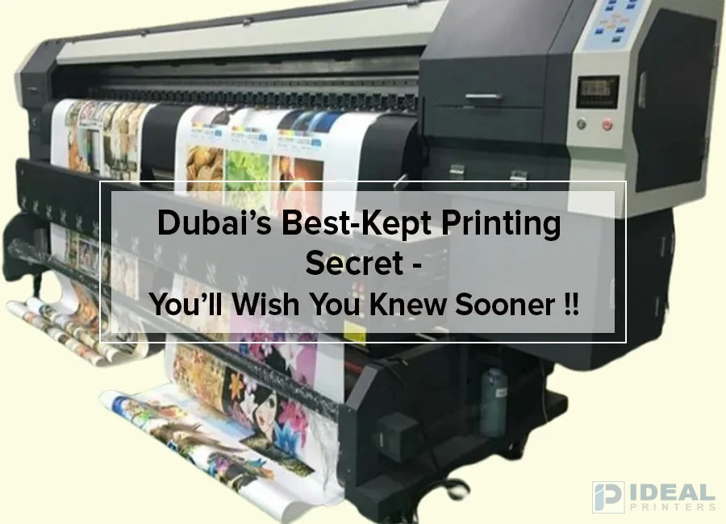
Lahore's Best-Kept Printing Secret - You'll Wish You Knew Sooner
Lahore is a busy commercial area, and good printing equipment is a must. You may require ID Cards in Pakistan, business documents, or personalized prints. It is hard to select the ideal Printing Shop ...Read more
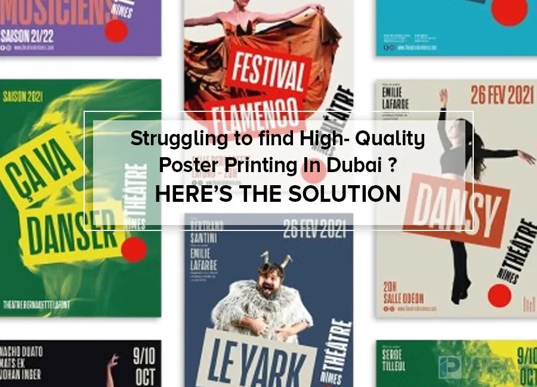
Struggling to Find High-Quality Poster Printing in Lahore? Here's the Solution!
Posters, even in today's business and marketing scenario, remain one of the most effective tools of advertisement, promotion, and communication. From promotional poster printing to advertisement ...Read more
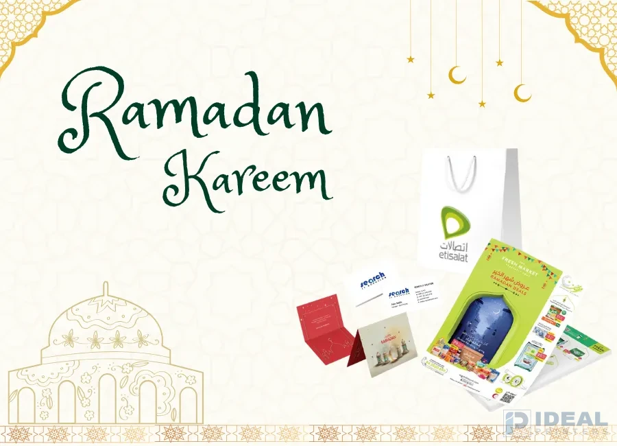
Ramadan 2025 Must-Have: Exclusive Custom Prints for Your Celebrations!
Get exclusive custom prints for Ramadan 2025 with Ideal Printers Lahore! From luxury packaging to personalized greeting cards, elevate your celebrations with high-quality printing ...Read more
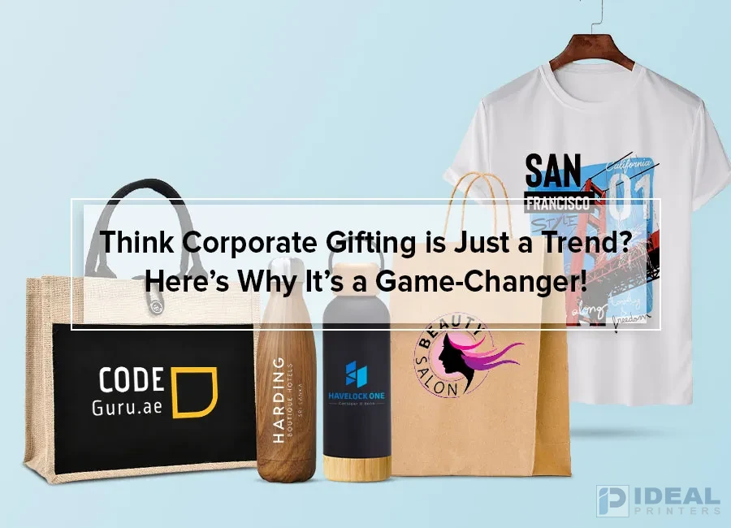
Think Corporate Gifting is Just a Trend? Here's Why It's a Game-Changer!
Corporate gifting is not only a tradition; it's a very powerful marketing tool that builds good business relationships. Networking and brand image being significant in Lahore, the selection of ...Read more
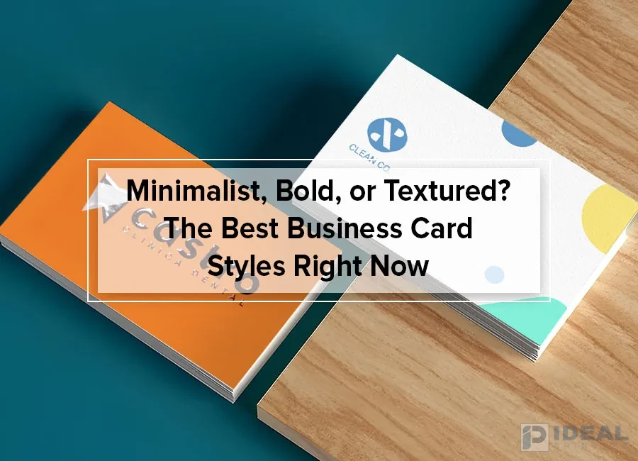
Minimalist, Bold, or Textured? The Best Business Card Styles Right Now
A business card is more than a means of exchanging contact information; it is your brand. Impression matters, whether you're meeting clients or exchanging your card in professional environments ...Read more
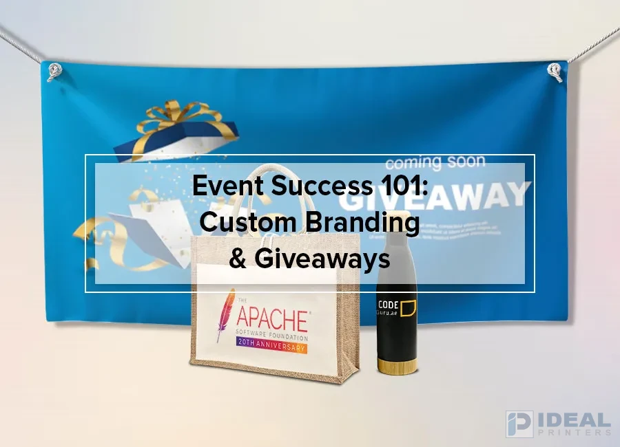
Event Success 101: Custom Branding & Giveaways That Keep Your Brand in the Spotlight
Are you organizing an event in Lahore? Be it a business conference, product launch, or trade show, getting noticed requires custom branding and promotional gifts. A branded event makes ...Read more
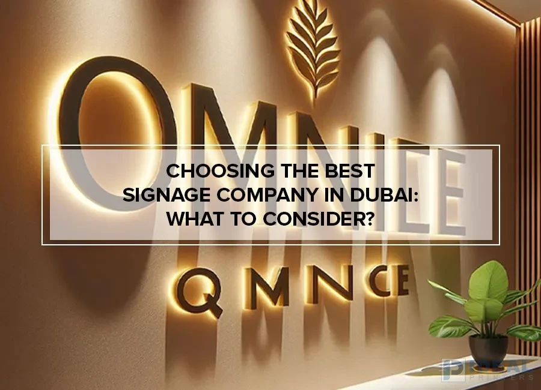
Choosing the Best Signage Company in Lahore: What to Consider?
In Lahore's fast-paced business community, standing out is key to success. Effective signage can draw in customers and establish your brand. From shop signs to large advertisements ...Read more
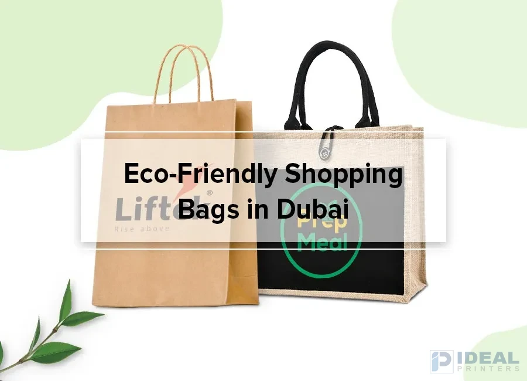
Eco-Friendly Shopping Bags in Lahore: The Game-Changer for Sustainable and Stylish Branding
In a city famous for innovation and luxury, green shopping bags are making a huge impact. These bags are important to consumers and businesses that care about the environment. In Lahore ...Read more
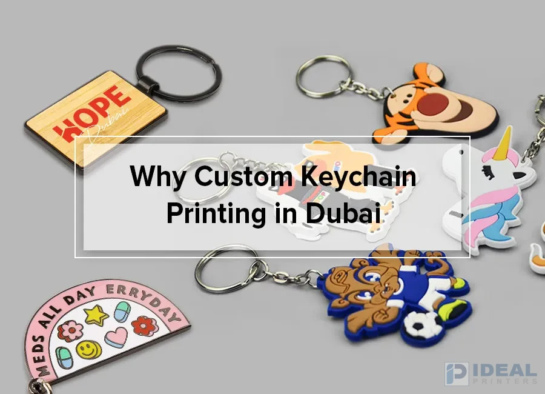
Why Custom Keychain Printing in Lahore is the Best Kept Marketing Secret - Find Out Now!
In the hustle and bustle of today's business environment, standing out from the crowd matters. Although numerous promotional items abound, custom keychains are loved ...Read more
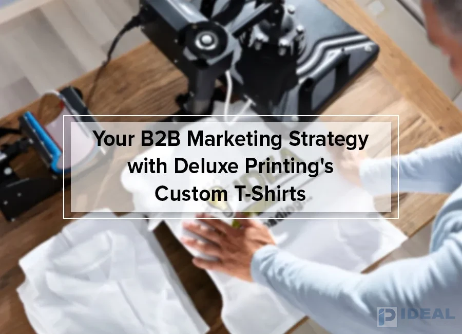
Unlock B2B Success: How T-Shirt Printing Can Revolutionize Your Marketing!
In today's competitive B2B landscape, businesses are constantly seeking innovative ways to enhance brand visibility, foster client loyalty, and differentiate themselves from ...Read more

Don't Print Another Thing Until You Read This!
Printing is more than just ink on paper-it's an extension of your brand. Whether it's a business card, corporate brochure, or custom signage, your printed materials tell a story about your business. But not all printing is created equal. If ...Read more
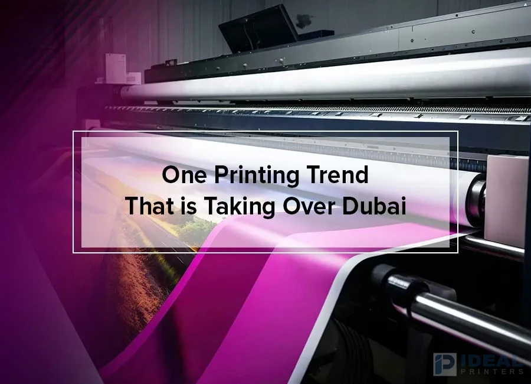
This One Printing Trend is Taking Over Lahore - Are You Ready?
A decade into 2025 promises vast opportunities for diversification. Your product's uniqueness can help distinguish it from the same ideas circulating in every office. Perhaps unique printed matter does the job right ...Read more
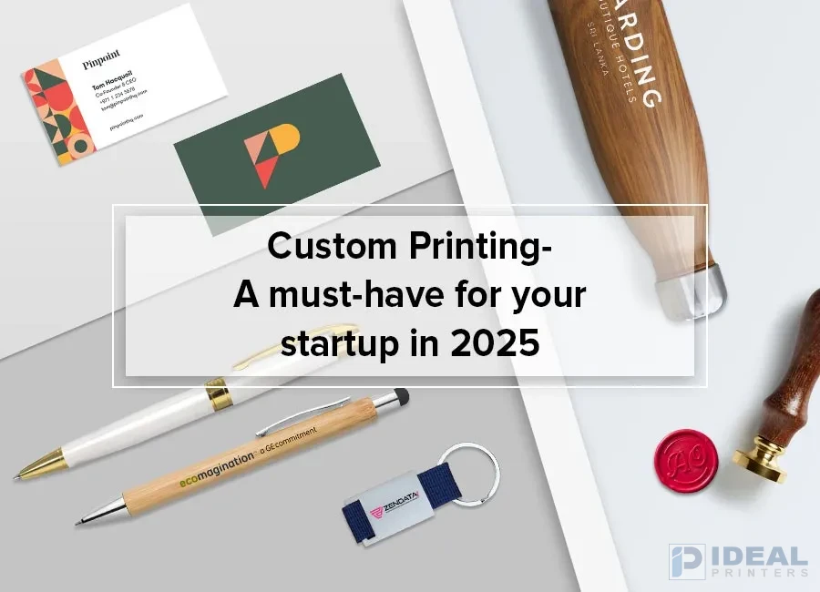
Why Custom Printing is a Must-Have for Your Startup in 2025
A decade into 2025 promises vast opportunities for diversification. Your product's uniqueness can help distinguish it from the same ideas circulating in every office. Perhaps unique printed matter does the job right ...Read more
Emerging Trends in Signage Printing: Redefining Brand Visibility in Lahore
Signage in Lahore has evolved rapidly, and signage boards are now more important than ever in shaping how businesses communicate with their target audience. As the city embraces modernity, signage remains a powerful tool to boost ...Read more
Choosing the Right Banner for Your Event: Roll Up, Fence, Fabric, or Flex?
Banners are mostly meant to be used as advertisements. They help promote offline business and raise the company's profile among their intended audience. Ideal Printers makes unique customized banners that fit ...Read more
Stand Tall, Sell More: Optimizing Retail Spaces with Product Display Stands
Sales and customer engagement in the cutthroat retail industry can be greatly impacted by the way things are displayed. Product display displays are essential for drawing customers' attention, arranging goods, and encouraging sales. In order ...Read more
Cozy Up Your Home: Styling Tips with Blankets and Bean Bags
The secret to designing a warm and appealing home is striking the ideal balance between comfort and flair. Ideal Printers recognizes the value of bespoke and uniquely printed home decor pieces that showcase your style. Today, we're going to give you some professional styling advice on how to use floor cushions, ...Read more

Why Custom Fabric Printing is the Future of Fashion in Lahore?
Lahore, a city famous for its high-end lifestyle, new ideas, and fashionable trends, is moving towards the future by using custom fabric printing. This advanced technology is changing the fashion world, providing lots of opportunities for creativity and personalization. Whether it's bandanas, Sheilas, or scarves for bags, custom fabric printing is changing ...Read more
Transform Your Business with Stunning Signage in Lahore: Trends for 2024
Having the correct signage may greatly influence your business in Lahore, a bustling city where elegance and innovation combine. Effective signage can attract customers, enhance brand visibility, and create a memorable first impression, whether you're a small boutique or a large ...Read more
Product Customization's Importance in the Business World
Product customization affects everything from lifestyle to workplace engagement in an individual global civilization that influences how we live our everyday lives.
We go into greater detail about the huge importance of customized items
...Read more
Dive into Design: Backdrops and Exhibitions Crafted for Your Event
Enter the universe of backdrops and exhibitions offered by Ideal Printers, where creativity is unrestricted. Explore how our cutting-edge products can make routine occasions into remarkable experiences by reading this blog. Every component, ...Read more
Canvas Prints - Part of any Home or Office Decor
These days, canvas photo prints are becoming a lot more popular. They decorate residences, workplaces, restaurants, shops, etc. Using stress-free, enjoyable, and personalized canvas prints is one of the finest methods to quickly and affordably customize ...Read more
Everything You Need To Know About Flag Printing
The design section is where the flag printing process begins. Here, designers create and modify the design to fit the specifications of the client in terms of size and shape. Since flags come in a variety of sizes and shapes - such as Feather flags, Festival flags, Tear Drop flags, Pennant flags, and so on'the designers first modify the flag's sizes and shapes to ...Read more
Best Custom Gifts for Employee
Choosing the ideal present for an employer can be somewhat difficult. Whether it's a gift for a birthday, a work anniversary, or the holidays, you want to look for something original and considerate. Employers should consider custom presents because they show your dedication and effort in selecting the present. Here are some of the best custom corporate gifts to ...Read more
Use Eye-Catching Signage Design to Promote Your Business
When you join or move into a new office environment, you need to make your own space. Office wall signage, conference room 3D quotes, 3D lobby logos, and a door name plate for the company are all featured in that modification. This is essential since you have to make the most of the space you have, and ...Read more
What makes Frosted Glass Stickers the best option?
The most significant aspect of our lives is privacy. Everyone worries about privacy in their room, at work, or in other places where they spend most of their time. For this, we mostly employ windows and doors. Nowadays, iron windows and doors are not a wise choice. Glass windows and doors are the right options ...Read more
Top Business Card Design Trends for Professionals in Lahore
We have to look at the firms that are popular in the city in 2024 to examine the most recent business card trends in Lahore. Despite the worldwide challenges posed by climate change and other circumstances, it is clear in Lahore that people are finding innovative methods to start businesses, achieve success, and take on ...Read more
Marketing Offline Is Still Useful! Customized Prints Are Key To Your Branding
The majority of people don't seem to get the attractiveness of offline marketing in the modern era of digital things. Offline marketing, which includes hoardings, banners, pamphlets, and backdrops, can still have a significant impact on your company and improve your marketing ...Read more
The Ultimate Guide to Print Services in Lahore: Everything You Need to Know for High-Quality Printing Solutions
Welcome to our Ideal Printers printing services in Lahore, where we explore everything you need to know about finding high-quality printing solutions. Whether you're a small business owner, a marketing professional, or simply looking to print personal materials, this guide will provide you with the insights you need ...Read more